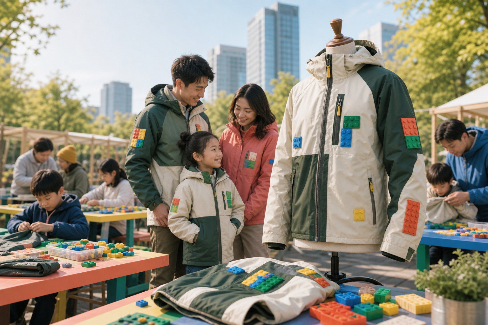

A LEGO x Patagonia Collaboration
ReWear Blocks
A modular repair-kit business proposal that turns damaged clothing and gear into visible, playful, measurable climate action.
3Core outcomes: repair, personalize, waste less
24Patch pieces in the first MVP kit
5 minAcademic/business pitch format